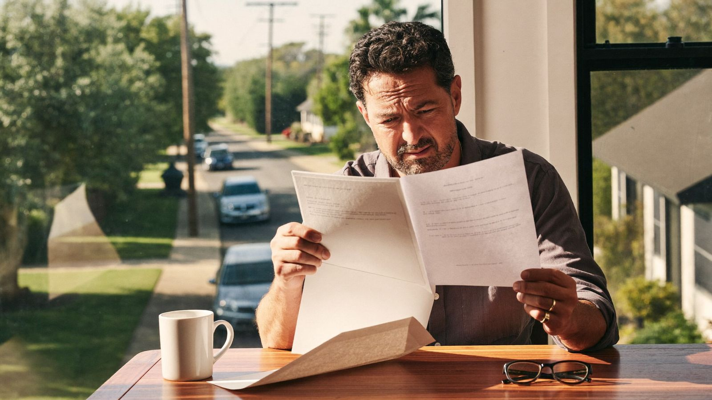

Insurance says replace your roof — or they'll drop you. Here's your Texas game plan.
That letter feels like an ultimatum, but you have more time and more options than it sounds like. Here's exactly what to do, in order, before your deadline.

Every week we hear from another Houston-area homeowner holding the same letter: the insurance company says the roof is too old, and if it isn't replaced (or repaired, or professionally inspected) by a certain date, the policy won't be renewed. If that's you — take a breath. This is common, it's manageable, and the worst thing you can do is either panic-hire the first roofer who answers the phone or ignore the letter and hope it goes away.
Here's what the letter actually means, what Texas law says about your timeline, and the step-by-step plan we walk our own customers through.
First: what the letter actually means
Your insurance company can't force you to replace your roof. What they can do is decline to keep insuring your house — and with Texas hail and wind losses climbing every year, insurers have gotten aggressive about it. Most letters fall into one of three buckets:
- Replace by a date or we won't renew. The strongest version. Usually triggered by roof age (15–20 years is the common cliff) or by aerial imagery showing wear.
- Provide proof of repairs or an inspection. Softer. The underwriter wants documentation that the roof has life left — this one you can often satisfy without a full replacement.
- Coverage change instead of an ultimatum. Some carriers quietly switch older roofs from replacement cost (RCV) to actual cash value (ACV) at renewal. Your policy survives, but a future claim on a 15-year-old roof might pay out a fraction of what a new roof costs. Check your renewal documents for this one — it doesn't always come with a letter.
How much time do you actually have?
In Texas, an insurer must send you a non-renewal notice at least 60 days before your policy expires. If the notice arrived later than that, or you think it's unfair, you can file a complaint with the Texas Department of Insurance at 800-252-3439 — TDI takes these seriously.
In practice, most homeowners have somewhere between 30 and 90 days from the letter to their compliance date. Two things to do right now:
- Find the exact deadline in the letter — the compliance date and your policy expiration date aren't always the same day.
- Note exactly what they're asking for: "replace," "repair," and "provide inspection documentation" are very different price tags.
Don't let the policy lapse
Even a short gap in coverage makes you harder (and pricier) to insure, and if you have a mortgage, your lender can force-place insurance that costs far more and protects only the lender. Whatever path you choose, close it out before the expiration date.
Your step-by-step game plan
- Read the letter twice, then call your agent. Ask one question and get the answer in writing: "Exactly what documentation will satisfy the underwriter?" Sometimes it's a full replacement. Sometimes it's an inspection report. You need to know which game you're playing before you spend money.
- Get an independent roof inspection — fast. A professional inspection (we do them free, same week) tells you what the roof actually needs, independent of what the insurer assumed from a drone photo. It also produces the documentation: photos, remaining-life assessment, and a written report you can send to the underwriter.
- If repairs can satisfy them, do the repairs. If the underwriter confirms that targeted work — new pipe boots, flashing, a section of shingles — plus documentation will keep your policy, that's usually thousands cheaper than replacing. Get the invoice and before/after photos to your agent well before the deadline.
- If replacement is the only path, get a fixed written price and a real schedule. You don't have time for vague bids. You want a fixed-price written estimate, a start date that beats your deadline with margin, and a contractor who'll put both in writing. Most roof replacements take one to two days once materials are on site — the lead time is in scheduling and material delivery, not the work itself.
- Choose shingles with your premium in mind. Texas insurers must offer discounts for Class 4 impact-resistant shingles, and on the Gulf Coast that discount compounds every year. If you're being forced into a new roof anyway, this is the moment to buy down your future premiums. We priced this out in our Houston roof cost guide.
- Send proof before the deadline — and confirm receipt. Completion photos, the invoice, the permit, and the warranty. Email them to your agent, then confirm the underwriter has actually cleared the requirement. "I mailed it" is not the same as "they've renewed me."
- If they drop you anyway, shop it. An independent agent can quote carriers that are friendlier to your situation — especially with a brand-new roof on the declarations page. A new roof turns you from the applicant nobody wants into the one everybody does.
The silver lining nobody mentions
A forced roof replacement feels like pure bad news, but you're buying real things with that money: a 25-year workmanship warranty (that's ours — manufacturer warranties on the shingles run longer), restored replacement-cost coverage, a Class 4 discount on premiums, and a roof that goes into the next hurricane season new instead of at year 18. Homeowners who replace on an insurer's schedule and homeowners who replace after a hurricane finds the weak spot pay about the same — but only one of them also has ceiling damage.
The insurance company's deadline is annoying. A hurricane's deadline is worse.
Common questions
Can they really do this?
Yes. Texas law lets an insurer non-renew over roof age or condition as long as they give proper notice. What they can't do is cancel you mid-term without a listed reason, skip the 60-day notice, or misrepresent what your policy covers. When in doubt, call TDI at 800-252-3439.
Is this the same as filing a storm damage claim?
No — and mixing them up gets expensive. If your roof has actual storm damage, that may be a covered claim under your current policy, and you should read our step-by-step guide to filing a roof insurance claim in Texas first. A non-renewal letter over roof age, with no storm event, is a maintenance decision — your policy won't pay for it. An honest inspection will tell you which situation you're in.
What if the roof honestly has years left?
Then fight it with paper, not frustration. A written inspection report from an insured local contractor documenting the roof's condition and remaining life is the strongest card you have. Some underwriters accept it; some don't — but it costs you nothing to find out, and it's the same inspection you'd need anyway to plan repairs.
On a deadline from your insurance company?
We'll inspect your roof this week, give you the written documentation your insurer needs, and a fixed price the same day — repair or replacement, whichever the roof actually calls for.